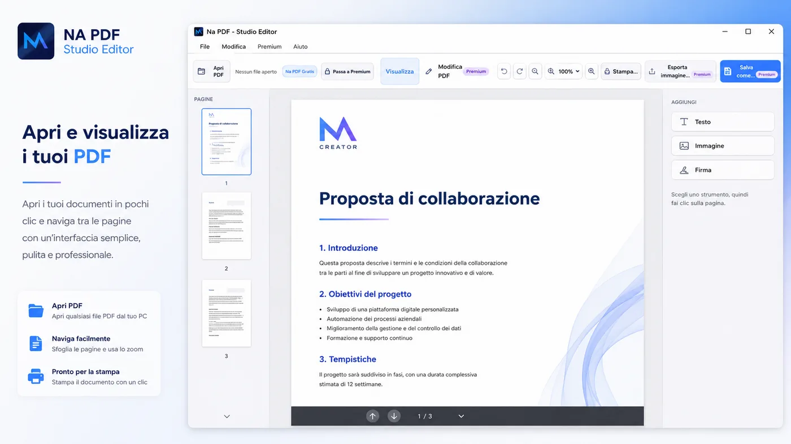
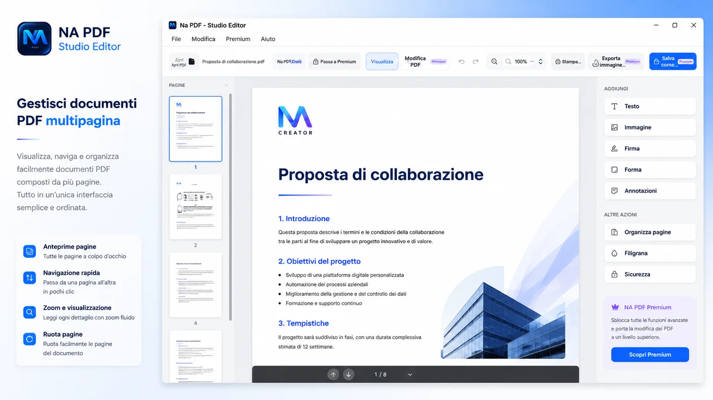
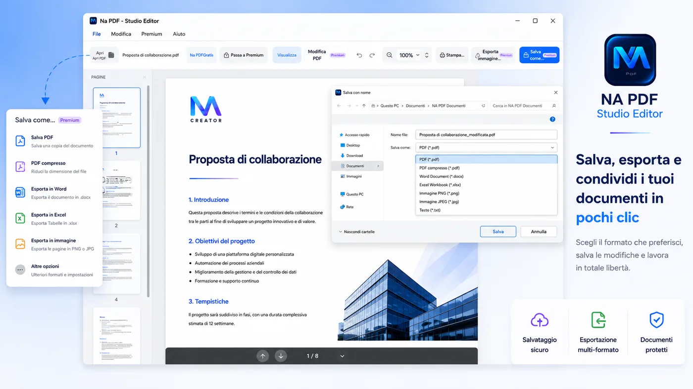
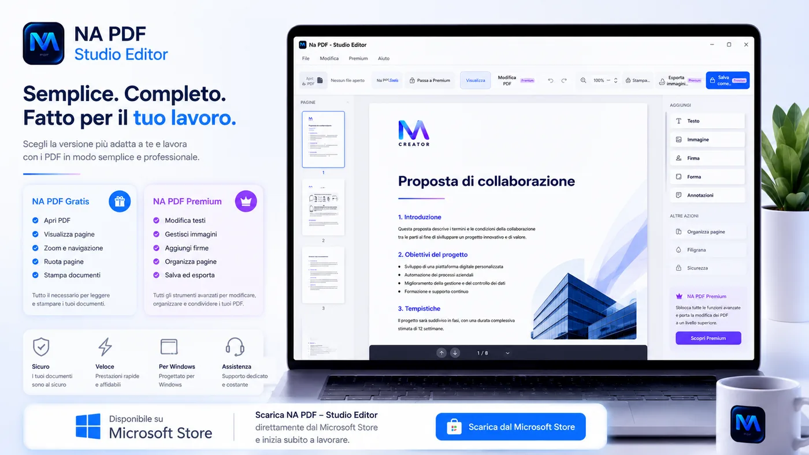

I documenti PDF sono ormai presenti in quasi ogni attivita' quotidiana: preventivi, contratti, fatture, comunicazioni, relazioni, moduli e documenti di lavoro viaggiano spesso in questo formato. Il problema nasce quando bisogna correggere un testo, inserire un'immagine, modificare una pagina o stampare il documento dopo aver fatto alcune modifiche.
Per molte persone questo significa aprire piu' programmi diversi, passare da un visualizzatore a un editor, cercare strumenti separati e perdere tempo in operazioni che dovrebbero essere piu' semplici.
Per rendere queste attivita' piu' ordinate nasce NA PDF - Studio Editor, il nuovo programma per Windows sviluppato da NA Creator e pensato per lavorare con i PDF in un unico ambiente chiaro.
Che cos'e' NA PDF - Studio Editor
NA PDF - Studio Editor e' un'applicazione desktop dedicata alla gestione dei documenti PDF. Il programma permette di aprire un documento direttamente dal computer e visualizzarlo attraverso un'interfaccia moderna, chiara e familiare.
L'obiettivo e' mettere a disposizione dell'utente gli strumenti realmente necessari, evitando schermate troppo complesse e funzioni difficili da trovare. Dalla stessa applicazione e' possibile consultare il documento, spostarsi tra le pagine, utilizzare lo zoom, ruotare le pagine e preparare il file per la stampa.
Con la versione Premium diventano disponibili anche gli strumenti avanzati dedicati alla modifica dei contenuti.

Le funzioni disponibili gratuitamente
NA PDF - Studio Editor puo' essere utilizzato anche gratuitamente come visualizzatore PDF per Windows. La versione gratuita e' pensata per chi ha bisogno soprattutto di leggere, controllare o stampare file PDF.
- Aprire documenti PDF presenti sul computer
- Visualizzare tutte le pagine del documento
- Aumentare o diminuire lo zoom
- Spostarsi velocemente tra le pagine
- Ruotare le pagine
- Stampare il documento originale
- Utilizzare un'interfaccia semplice e ordinata
Un programma pensato per il lavoro quotidiano
NA PDF - Studio Editor non e' rivolto soltanto agli utenti esperti. I comandi principali sono organizzati in modo chiaro, cosi' da permettere all'utente di individuare rapidamente gli strumenti necessari.
Uffici e aziende
Per lavorare con comunicazioni, relazioni, contratti, preventivi, modulistica e documenti amministrativi.
Professionisti
Per correggere documenti, preparare file da inviare ai clienti e gestire il proprio archivio PDF.
Studenti
Per leggere dispense, consultare documenti, stampare materiale didattico e organizzare file.
Attivita commerciali
Per lavorare con listini, ordini, schede prodotto, fatture e documentazione interna.
Gestione dei documenti multipagina
Molti PDF non sono semplici file da leggere: possono contenere piu' pagine, allegati operativi, tabelle, immagini e contenuti che devono essere controllati con attenzione.
NA PDF - Studio Editor e' pensato per aiutare l'utente a muoversi tra le pagine del documento e mantenere una visione chiara del lavoro, anche quando il file e' composto da piu' sezioni.


Salvataggio, stampa ed esportazione
Dopo aver lavorato su un documento, l'utente deve poter salvare il risultato e prepararlo per la stampa o per l'invio.
NA PDF - Studio Editor centralizza queste operazioni nello stesso ambiente di lavoro, cosi' da ridurre i passaggi e rendere piu' fluido il rapporto con documenti, revisioni e versioni finali.
Disponibile su Microsoft Store

Un progetto sviluppato da NA Creator
NA PDF - Studio Editor e' un progetto realizzato da NA Creator, realta' italiana dedicata allo sviluppo di software, applicazioni desktop, piattaforme web e soluzioni digitali.
Il programma nasce dall'idea di creare uno strumento pratico, moderno e accessibile, capace di semplificare una delle attivita' piu' comuni nel lavoro quotidiano: la gestione dei documenti PDF. L'applicazione continuera' a essere migliorata attraverso nuovi aggiornamenti e l'introduzione progressiva di ulteriori strumenti.
I tuoi PDF, finalmente in un unico spazio di lavoro
Apri, visualizza, stampa e modifica i tuoi documenti direttamente dal computer.
NA PDF - Studio Editor porta gli strumenti principali per lavorare con i PDF dentro un ambiente semplice, ordinato e pensato per Windows.
Scarica dal Microsoft Store